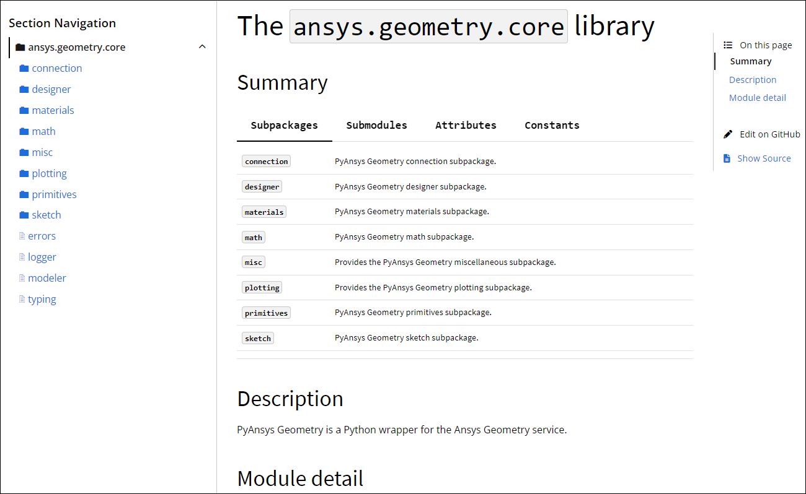

Content in PY files#
In Python, a module is a PY file that contains Python objects such as interfaces, functions, classes, methods, parameters, attributes, enums (enumerations), properties, and constants. These objects each have a docstring that describes and explains how to use it to interact with the library. When building documentation, Sphinx assembles the content in these docstrings to generate API reference documentation.
This section covers the setup and processing of PY files by Sphinx, fundamental Python objects, and formatting rules for docstrings, code comments, and message strings.
For resources related to PY files, see Style and formatting resources. To learn how PY files for PyAnsys libraries are formatted, see PY file formatting.
PY file setup#
A Python client library consists of PY files that are organized and packaged in a way that makes it easy for users to interact with the library and its underlying APIs and services.
In a PyAnsys client library, PY files are organized in the src directory.
Warning
The folder and file names in the src directory cannot contain spaces or hyphens.
Replace these characters with an underscore (_).
Each subpackage contains an __init__.py file, which contains any
necessary package-level initialization code.
NumPy docstrings#
Properly documented code is crucial to code readability, maintainability, and usability. For information on the two most popular conventions for formatting docstrings, see the numpydoc style guide and Comments and Docstrings in the Google Python Style Guide.
While Sphinx supports both the numpydoc extension for NumPy-style docstrings
and the napoleon extension for Goggle Python-style docstrings, PyAnsys libraries
use NumPy-style docstrings because this convention is favored by the most well known
Python scientific packages.
For information on how to format docstrings so that they render correctly in PyAnsys API reference documentation, see PY file formatting.
API documentation extensions#
Older PyAnsys libraries use the native (built-in) sphinx.ext.autodoc extension to
generate API reference documentation. This extension requires developers to manually author
RST files and import code, which means that they can overlook Python objects when
setting up their API reference documentation. For more information, see
sphinx.ext.autodoc in the Sphinx documentation.
Newer PyAnsys projects use the external Sphinx AutoAPI extension to generate API reference documentation. This extension finds and generates content by parsing the source code, ensuring that the API reference documentation includes every Python client object in every PY file. Generally, API members in projects using Sphinx Auto API are ordered as follows:
Subpackages
Submodules
Exceptions
Classes
Functions
Methods
The PyAnsys core team has contributed to the Sphinx AutoAPI extension to make the API reference documentation that it generates much more navigable and attractive. The goal is to eventually transition all PyAnsys libraries to use Sphinx AutoAPI so that all API reference documentation looks like this sample page from the PyAnsys Geometry documentation:
For more information on adding Sphinx extensions to a project, see Add Sphinx extensions.